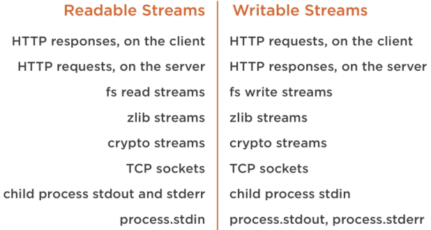
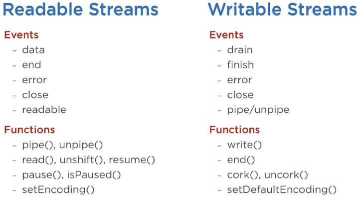

Intro
- download NodeJS installer: https://nodejs.org/en/download/
- single-threaded, non-blocking, asynchronous programming, eliminates the waiting, and simply continues with the next request
- files have extension ".js", initiated on the server before having any effect, contain tasks that will be executed on certain events like someone trying to access a port on the server
- generate dynamic page content; create, open, read, write, delete, and close files on the server; collect form data; add, delete, modify data in your database
- run file:
node file.js
- modules - same as JS libraries, set of functions to include in application
- package contains all the files you need for a module
# Using Ubuntu
curl -fsSL https://deb.nodesource.com/setup_18.x | sudo -E bash -
sudo apt-get install -y nodejs
# Using Debian, as root
curl -fsSL https://deb.nodesource.com/setup_18.x | bash -
apt-get install -y nodejs
// Clear NPM cache:
sudo npm cache clean -f
// install a little helper called 'n'
sudo npm install -g n
// Install latest stable Node.js version
sudo n stable
// specific version install:
sudo n 0.8.20
// remove
sudo apt-get purge nodejs
sudo apt-get autoremove
Globals
Global object - global or module scope modules, functions, strings and object etc.
- __dirname - name of the directory that currently contains the code
- __filename - filename of the code being executed, resolved absolute path of this code file
- Console
- Process
- Buffer
- setImmediate(callback[, arg][, ...])
- setInterval(callback, delay[, arg][, ...])
- setTimeout(callback, delay[, arg][, ...])
- clearImmediate(immediateObject)
- clearInterval(intervalObject)
- clearTimeout(timeoutObject)
Process
properties
| Property | Description |
|---|
| arch | returns process architecture: 'arm', 'ia32', or 'x64' |
| args | returns commands line arguments as an array |
| env | returns user environment |
| pid | returns process id of the process |
| platform | returns platform of the process: 'darwin', 'freebsd', 'linux', 'sunos' or 'win32' |
| release | returns the metadata for the current node release |
| version | returns the node version |
| versions | returns the node version and its dependencies |
console.log(`Process Architecture: ${process.arch}`);
console.log(`Process PID: ${process.pid}`);
console.log(`Process Platform: ${process.platform}`);
console.log(`Process Version: ${process.version}`);
process.argv.forEach((value, index, array) => {
console.log(`${index}: ${value}`);
});
functions
| Function | Description |
|---|
| cwd() | returns path of current working directory |
| hrtime() | returns the current high-resolution real time in a [seconds, nanoseconds] array |
| memoryUsage() | returns an object having information of memory usage. |
| process.kill(pid[, signal]) | is used to kill the given pid. |
| uptime() | returns the Node.js process uptime in seconds. |
console.log(`Current directory: ${process.cwd()}`);
console.log(`Uptime: ${process.uptime()}`);
Modules
- exports variable is available within a module file-level scope, and is assigned the value of module.exports before the module is evaluated:
- if you assign anything to module.exports or to exports they are no longer bounded
- you cant require() ESM scripts; you can only import ESM scripts, like this: import {foo} from 'foo'
- CJS scripts cant use static import statements like the one above
- ESM scripts can import CJS scripts, but only by using the "default import" syntax import _ from 'lodash', not the "named import" syntax import {shuffle} from 'lodash', which is a hassle if the CJS script uses named exports
- ESM scripts can require() CJS scripts, even with named exports, but its typically not worth the trouble, because it requires even more boilerplate, and, worst of all, bundlers like Webpack and Rollup dont/wont know how to work with ESM scripts that use require()
- CJS is the default; opt-in to ESM mode by renaming your script from .js to .mjs. Alternately, you can set "type": "module" in package.json, and then you can opt-out of ESM by renaming scripts from .js to .cjs. (you can even tweak just an individual subdirectory by putting a one-line {"type": "module"} package.json file in there.)
module.exports = {a: 'A'};
exports.b = 'B'; // exports !== module.exports
module.exports.hello = true; // exported from require of module , if then
exports = { hello: false }; // exports !== module.exports
exports.foo = 'foo'; // ignored ...
module.exports = () => { console.log('bar'); }; // exported
// when the module.exports property is being completely replaced by a new object,
// it is common to also reassign exports:
module.exports = exports = function Constructor() {
// ... etc.
}
// --- CommonJS (CJS)
// - export
// named
module.exports.sayHello = function sayHello (name) { return `Hello ${name}` }
exports.method = function() {};
exports.otherMethod = function() {};
// default
module.exports = function sayHello (name) { return `Hello ${name}` }
// or
module.exports = {
sayHello: function sayHello (name) {
return `Hello ${name}`
},
sayHello2,
}
// - import
// named without changing the name
const { sayHello } = require('./commonjs/named')
// named import changing the name
const { sayHello: say2 } = require('./commonjs/named')
// default
const sayDefault = require('./commonjs/default')
// or
const say2 = require('./commonjs/named').sayHello
// --- ES Modules (ESM) (Node 14+)
// - export
// named
export function sayHello (name) { return `Hello ${name}` }
// default
export default function sayHello (name) { return `Hello ${name}` }
// - import
// named without changing the name
import { sayHello } from './esm/named.js'
// named import changing the name
import { sayHello as say2 } from './esm/named.js'
// default
import sayDefault from './esm/default.js'
console.log(sayHello('World'))
console.log(say2('World'))
console.log(sayDefault('World'))
// --- bare-paths - declare/export libraries from a node_modules directory
// - CJM
// node_modules/my-lib/package.json
{ "main": "index.js" }
// node_modules/my-lib/index.js
module.exports.sayHello = function sayHello (name) { return `Hello ${name}` }
// import
const say3 = require('my-lib')
console.log(say3('World'))
// - ESM
// node_modules/my-esm-lib/package.json
{ "main": "index.js" }
// node_modules/my-esm-lib/index.js
export default function sayHello (name) { return `Hello ${name}` }
// import
import say3 from 'my-esm-lib'
console.log(say3('World'))
Import CJS module into ESM project
// commonjs/named.js
module.exports.sayHello = function sayHello (name) { return `Hello ${name}` }
// commonjs/default.js
module.exports = function sayHello (name) { return `Hello ${name}` }
// all the module.exports object in CJS will be converted to a single ESM default export
// you cannot use ESM named exports when importing CommonJS modules
// --- "fake" import
// named without changing the name
import named from './commonjs/named.js'
const { sayHello } = named
// named import changing the name
import named2 from './commonjs/named.js'
const { sayHello: say2 } = named2
// default
import sayDefault from './commonjs/default.js'
// --- intermediate module
// bridge/named.mjs
import named from '../commonjs/named.js'
export const sayHello = named.sayHello
Import it as named import
// index.mjs (with bridged modules)
// named without changing the name
import { sayHello } from './bridge/named.mjs'
// named import changing the name
import { sayHello as say2 } from './bridge/named.mjs'
Import ESM module into CJS project
// esm/named.mjs
export function sayHello (name) { return `Hello ${name}` }
// esm/default.mjs
export default function sayHello (name) { return `Hello ${name}` }
// --- import with "esm" package
// returns everything as an object of named imports
const esmRequire = require('esm')(module)
// named without changing the name
const named = esmRequire('./esm/named.mjs')
const { sayHello } = named
// named import changing the name
const { sayHello: say2 } = named
// ESM default export becomes a named import called .default
const sayDefault = esmRequire('./esm/default.mjs').default
// --- with import() operator
// - returns a Promise, you need .then() or await
// - returns everything as an object of named imports
// - access the default-exported thing with .default-property
// index.js
;(async function () {
// named without changing the name
const named = await import('./esm/named.mjs')
const { sayHello } = named
// named import changing the name
const { sayHello: say2 } = named
// default
const sayDefault = (await import('./esm/default.mjs')).default
console.log(sayHello('World'))
console.log(say2('World'))
console.log(sayDefault('World'))
})()
// --- intermediate modules with "esm" package
// bridge2/default.js - enable CJS default export
require = require('esm')(module)
module.exports = require('../esm/default.mjs').default
// bridge2/named.js - make other libraries ready for CJS import
require = require('esm')(module)
module.exports = require('../esm/named.mjs')
// require them:
const named = require('./bridge2/named.mjs')
const { sayHello } = named
// named import changing the name
const { sayHello: say2 } = named
// default
const sayDefault = require('./bridge2/default.mjs')
Built-in
| Module |
Description |
| assert | set of assertion tests |
| buffer | handle binary data |
| child_process | run a child process |
| cluster | split a single Node process into multiple processes |
| crypto | handle OpenSSL cryptographic functions |
| dgram | implementation of UDP datagram sockets |
| dns | do DNS lookups and name resolution functions |
| events | handle events |
| fs | handle the file system |
| http | make Node.js act as an HTTP server |
| https | make Node.js act as an HTTPS server. |
| net | create servers and clients |
| os | Provides information about the operation system |
| path | handle file paths |
| punycode | Deprecated. A character encoding scheme |
| querystring | handle URL query strings |
| readline | handle readable streams one line at the time |
| stream | handle streaming data |
| string_decoder | decode buffer objects into strings |
| timers | execute a function after a given number of milliseconds |
| tls | implement TLS and SSL protocols |
| tty | Provides classes used by a text terminal |
| url | parse URL strings |
| util | access utility functions |
| v8 | access information about V8 (the JavaScript engine) |
| vm | compile JavaScript code in a virtual machine |
| zlib | compress or decompress files |
assert - test expressions
// if the expression evaluates to 0, or false,
// an assertion failure is being caused, and the program is terminated
var assert = require('assert');
// --- assert(expression, ?message)
assert(5 > 7);
assert(50 > 70, "My message goes here");
assert(50 - 50);
// --- assert.deepEqual(value1, value2, ?message)
var x = { a : { n: 0 } };
var y = { a : { n: 0 } };
var z = { a : { n: 1 } };
assert.deepEqual(x, y); // OK
assert.deepEqual(x, z); // AssertionError: { a: { n: 0 } } deepEqual {a: { n: 1 }
assert.deepEqual(x, z, "My message goes here");
// --- assert.deepStrictEqual(value1, value2, ?message)
var x = { a : { n: 0 } };
var y = { a : { n: 0 } };
var z = { a : { n: '0' } };
assert.deepStrictEqual(x, y); //OK
assert.deepStrictEqual(x, z); // AssertionError: { a: { n: 0 } } deepStrictEqual {a: { n: '0' } }
assert.deepStrictEqual(x, z, "My message goes here");
// --- assert.equal(value1, value2, ?message);
assert.equal(50, 50); //OK
assert.equal(50, "50"); //OK
assert.equal(50, 70); // AssertionError: 50 == 70
assert.equal(50, 70, "My message goes here");
// --- assert.notDeepEqual(value1, value2, ?message)
var x = { a : { n: 0 } };
var y = { a : { n: 0 } };
var z = { a : { n: 1 } };
assert.notDeepEqual(x, z); //OK
assert.notDeepEqual(x, y); // AssertionError: { a: { n: 0 } } notDeepEqual {a: { n: 0 } }
assert.notDeepEqual(x, y, "My message goes here");
// assert.notDeepStrictEqual(value1, value2, ?message)
var x = { a : { n: 0 } };
var y = { a : { n: 0 } };
var z = { a : { n: '0' } };
assert.notDeepStrictEqual(x, z); //OK
assert.notDeepStrictEqual(x, y); // AssertionError: { a: { n: 0 } } notDeepStrictEqual {a: { n: 0 } }
assert.notDeepStrictEqual(x, y, "My message goes here");
// --- assert.notEqual(value1, value2, ?message)
assert.notEqual(50, 70); //OK
assert.notEqual(50, 50); /*AssertionError: 50 != 50 */
assert.notEqual(50, 50, "My message goes here");
// --- assert.notStrictEqual(value1, value2, ?message)
assert.notStrictEqual(50, 70); //OK
assert.notStrictEqual(50, "50"); //OK
assert.notStrictEqual(50, 50); // AssertionError: 50 != 50
assert.notStrictEqual(50, 50, "My message goes here");
// --- assert.ok(expression, ?message)
assert.ok(50 > 70);
assert.ok(50 > 70, "My message goes here");
assert.ok(50 - 50); // throws an error if the expression evaluates to 0
// --- assert.strictEqual(value1, value2, ?message)
assert.strictEqual(50, 50); //OK
assert.strictEqual(50, "50"); // AssertionError: 50 === '50'
assert.strictEqual(50, "50", "My message goes here");
| Method |
Description |
| assert() |
Checks if a value is true. Same as assert.ok() |
| deepEqual() |
Checks if two values are equal |
| deepStrictEqual() |
Checks if two values are equal, using the strict equal operator (===) |
| doesNotThrow() |
|
| equal() |
Checks if two values are equal, using the equal operator (==) |
| fail() |
Throws an Assertion Error |
| ifError() |
Throws a specified error if the specified error evaluates to true |
| notDeepEqual() |
Checks if two values are not equal |
| notDeepStrictEqual() |
Checks if two values are not equal, using the strict not equal operator
(!==) |
| notEqual() |
Checks if two values are not equal, using the not equal operator (!=) |
| notStrictEqual() |
Checks if two values are not equal, using the strict not equal operator
(!==) |
| ok() |
Checks if a value is true |
| strictEqual() |
Checks if two values are equal, using the strict equal operator (===) |
| throws() |
|
buffers - handling streams of binary data
// --- keys()
for (x of buf.keys()) {
console.log(x);
}
// --- values() - display each value in a buffer object
for (x of buf.values()) {
console.log(x);
}
// --- entries() - content of a Buffer, both index and byte
var buf = Buffer.from('abc');
for (x of buf.entries()) {
console.log(x);
}
// --- toJSON() - buffer object as a JSON object
console.log(buf.toJSON())
// --- toString(?encoding, ?start, ?end) - buffer object as a string
console.log(buf.toString())
// --- write(value, ?start, ?bytes, ?encoding) - overwrite parts of an existing buffer
var buf = Buffer.from('abcdef');
buf.write('qq', 2);
console.log(buf.toString());
// --- from(obj, ?encoding)
// new buffer filled with the specified string, array, or buffer, default encoding is "utf8"
var buf = Buffer.from('abc');
console.log(buf);
// --- copy(target, ?targetStart, ?sourceStart, ?sourceEnd) - copy one buffer into parts of another buffer
var buf1 = Buffer.from('abcdefghijkl');
var buf2 = Buffer.from('HELLO');
buf2.copy(buf1, 2);
console.log(buf1.toString());
// copy parts of a buffer into parts of another buffer
var buf1 = Buffer.from('abcdefghijkl');
var buf2 = Buffer.from('HELLO');
buf2.copy(buf1, 2, 0, 2);
console.log(buf1.toString());
// --- concat(arr, ?length)
// join three buffer objects into one
var buf1 = Buffer.from('a');
var buf2 = Buffer.from('b');
var buf3 = Buffer.from('c');
var arr = [buf1, buf2, buf3];
var buf = Buffer.concat(arr);
console.log(buf);
// --- fill(value, ?start, ?end, ?encoding) - fills a buffer with the specified value
var buf = Buffer.alloc(15);
buf.fill('a');
console.log(buf);
var buf = Buffer.alloc(15);
buf.fill('a', 5, 10);
console.log(buf);
// --- slice(?start, ?end) - make a new buffer, based on parts from an existing buffer
var x = Buffer.from('abcdef');
var y = x.slice(2,5);
// --- alloc(size, ?fill, ?encoding)
var buf = Buffer.alloc(15);
console.log(buf);
var buf = Buffer.alloc(15, 'a');
console.log(buf);
// --- allocUnsafe(size)
var buf = Buffer.allocUnsafe(15);
console.log(buf);
var buf = Buffer.allocUnsafe(15);
console.log(buf);
//Empty the buffer, use the Buffer.fill() method to pre-fill the buffer
buf.fill(0);
console.log(buf);
// --- length - size of a buffer, in bytes
console.log(buf.length);
// --- byteLength(string, ?encoding)
var buf = Buffer.alloc(15);
var len = Buffer.byteLength(buf);
console.log(len);
var len = Buffer.byteLength('abc');
console.log(len);
// --- indexOf(value, ?start, ?encoding) - if a buffer incudes the phrase
var buf = Buffer.from('Hello, and welcome to Rome!');
console.log(buf.indexOf('e'));
// --- lastIndexOf(value, ?start, ?encoding)
// checks if a specified value is present in the buffer and returns the position
var buf = Buffer.from('Hello, and welcome to Rome!');
console.log(buf.lastIndexOf('e'));
// --- includes(value, ?start, ?encoding)
var buf = Buffer.from('Hello, and welcome to Rome!');
console.log(buf.includes('welcome'));
// --- compare(buf1, buf2)
var buf1 = Buffer.from('abc');
var buf2 = Buffer.from('abc');
var x = Buffer.compare(buf1, buf2);
console.log(x);
var buf1 = Buffer.from('a');
var buf2 = Buffer.from('b');
var x = Buffer.compare(buf1, buf2);
console.log(x);
var buf1 = Buffer.from('b');
var buf2 = Buffer.from('a');
var x = Buffer.compare(buf1, buf2);
console.log(x);
// --- equals(buf)
var buf1 = Buffer.from('abc');
var buf2 = Buffer.from('abc');
console.log(buf1.equals(buf2));
var buf1 = Buffer.from('abc');
var buf2 = Buffer.from('abcd');
console.log(buf1.equals(buf2);
// --- isEncoding(encoding) - returns true if the specified encoding is supported
console.log(Buffer.isEncoding('utf8'));
console.log(Buffer.isEncoding('windows-1252'));
// --- isBuffer(obj) - if an object is a Buffer object
var x = 'abc';
console.log(Buffer.isBuffer(x));
| Method |
Description |
| alloc() |
Creates a Buffer object of the specified length |
| allocUnsafe() |
Creates a non-zero-filled Buffer of the specified
length |
| allocUnsafeSlow |
Creates a non-zero-filled and non-pooled Buffer of
the specified length |
| byteLength() |
Returns the numbers of bytes in a specified object |
| compare() |
Compares two Buffer objects |
| concat() |
Concatenates an array of Buffer objects into one
Buffer object |
| copy() |
Copies the specified number of bytes of a Buffer
object |
| entries() |
Returns an iterator of "index" "byte" pairs of a
Buffer object |
| equals() |
Compares two Buffer objects, and returns true if it
is a match, otherwise false |
| fill() |
Fills a Buffer object with the specified values |
| from() |
Creates a Buffer object from an object (string/array/buffer) |
| includes() |
Checks if the Buffer object contains the specified value. Returns true
if there is a match, otherwise false |
| indexOf() |
Checks if the Buffer object contains the specified value. Returns the
first occurrence, otherwise -1 |
| isBuffer() |
Checks if an object is a Buffer object |
| isEncoding() |
Checks if the Buffer object supports the specified encoding |
| keys() |
Returns an array of keys in a Buffer object |
| lastIndexOf() |
Checks if the Buffer object contains the specified value. Returns the
first occurrence, starting from the end, otherwise -1 |
| length |
Returns the length of a Buffer object, in bytes |
| poolSize |
Sets or returns the number of bytes used for pooling |
| readDoubleBE() |
Reads a 64 bit double from a Buffer object, returns the result in big
endian |
| readDoubleLE() |
Reads a 64 bit double from a Buffer object, returns the result in little
endian |
| readFloatBE() |
Reads a 32 bit float from a Buffer object, returns the result in big
endian |
| readFloatLE() |
Reads a 32 bit float from a Buffer object, returns the result in little
endian |
| readInt8() |
Reads a 8 bit integer from a Buffer object |
| readInt16BE() |
Reads a 16 bit integer from a Buffer object, returns the result in big
endian |
| readInt16LE() |
Reads a 16 bit integer from a Buffer object, returns the result in
little endian |
| readInt32BE() |
Reads a 32 bit integer from a Buffer object, returns the result in big
endian |
| readInt32LE() |
Reads a 32 bit integer from a Buffer object, returns the result in
little endian |
| readIntBE() |
Reads the specified number of bytes from a Buffer object, returns the
result in big endian |
| readIntLE() |
Reads the specified number of bytes from a Buffer object, returns the
result in little endian |
| readUInt8() |
Reads an unsigned 8 bit integer from a Buffer object |
| readUInt16BE() |
Reads an unsigned 16 bit integer from a Buffer object, returns the
result in big endian |
| readUInt16LE() |
Reads an unsigned 16 bit integer from a Buffer object, returns the
result in little endian |
| readUInt32BE() |
Reads an unsigned 32 bit integer from a Buffer object, returns the
result in big endian |
| readUInt32LE() |
Reads an unsigned 32 bit integer from a Buffer object, returns the
result in little endian |
| readUintBE() |
Reads the specified number of bytes from a Buffer object, returns the
result as an unsigned integer |
| readUIntLE() |
Reads the specified number of bytes from a Buffer object, returns the
result as an unsigned integer |
| slice() |
Slices a Buffer object into a new Buffer objects starting and ending at
the specified positions |
| swap16() |
Swaps the byte-order of a 16 bit Buffer object |
| swap32() |
Swaps the byte-order of a 32 bit Buffer object |
| swap64() |
Swaps the byte-order of a 64 bit Buffer object |
| toString() |
Returns a string version of a Buffer object |
| toJSON() |
Returns a JSON version of a Buffer object |
| values() |
Returns an array of values in a Buffer object |
| write() |
Writes a specified string to a Buffer object |
| writeDoubleBE() |
Writes the specified bytes, using big endian, to a Buffer object. The
bytes should be 64 bit double. |
| writeDoubleLE() |
Writes the specified bytes, using little endian, to a Buffer object. The
bytes should be 64 bit double. |
| writeFloatBE() |
Writes the specified bytes, using big endian, to a Buffer object. The
bytes should be 32 bit float. |
| writeFloatLE() |
Writes the specified bytes, using little endian, to a Buffer object. The
bytes should be 32 bit float. |
| writeInt8() |
Writes the specified bytes to a Buffer object. The bytes should be 8 bit
integer |
| writeInt16BE() |
Writes the specified bytes, using big endian, to a Buffer object. The
bytes should be 16 bit integer. |
| writeInt16LE() |
Writes the specified bytes, using little endian, to a Buffer object. The
bytes should be 16 bit integer. |
| writeInt32BE() |
Writes the specified bytes, using big endian, to a Buffer object. The
bytes should be 32 bit integer. |
| writeInt32LE() |
Writes the specified bytes, using little endian, to a Buffer object. The
bytes should be 32 bit integer. |
| writeIntBE() |
Writes the specified bytes, using big endian, to a Buffer object. |
| writeIntLE() |
Writes the specified bytes, using little endian, to a Buffer object. |
| writeUInt8() |
Writes the specified bytes to a Buffer object. The bytes should be 8 bit
unsigned integer |
| writeUInt16BE() |
Writes the specified bytes, using big endian, to a Buffer object. The
bytes should be 16 bit unsigned integer. |
| writeUInt16LE() |
Writes the specified bytes, using little endian, to a Buffer object. The
bytes should be 16 bit unsigned integer. |
| writeUInt32BE() |
Writes the specified bytes, using big endian, to a Buffer object. The
bytes should be 32 bit unsigned integer. |
| writeUInt32LE() |
Writes the specified bytes, using little endian, to a Buffer object. The
bytes should be 32 bit unsigned integer. |
| writeUIntBE() |
Writes the specified bytes, using big endian, to a Buffer object |
| writeUIntLE() |
Writes the specified bytes, using little endian, to a Buffer object |
child_process - creation of child processes for parallel processing on multi-core CPU
- child processes always have three streams child.stdin, child.stdout, and child.stderr which may be shared with the stdio streams of the parent process
- ways to create a child process
- exec - runs a command in a shell/console and buffers the output
- spawn - launches a new process with a given command
- fork - special case of the spawn() to create child processes
--- child_process.exec(command[, options], callback)
- command (String) The command to run, with space-separated arguments
- options (Object) may comprise one or more of the following options −
- cwd (String) Current working directory of the child process
- env (Object) Environment key-value pairs
- encoding (String) (Default: 'utf8')
- shell (String) Shell to execute the command with (Default: '/bin/sh' on UNIX, 'cmd.exe' on Windows, The shell should understand the -c switch on UNIX or /s /c on Windows. On Windows, command line parsing should be compatible with cmd.exe.)
- timeout (Number) (Default: 0)
- maxBuffer (Number) (Default: 200*1024)
- killSignal (String) (Default: 'SIGTERM')
- uid (Number) Sets the user identity of the process
- gid (Number) Sets the group identity of the process
- callback The function gets three arguments error, stdout, and stderr which are called with the output when the process terminates
- returns a buffer with a max size and waits for the process to end and tries to return all the buffered data at once
// support.js
console.log("Child Process " + process.argv[2] + " executed." );
// master.js
const fs = require('fs');
const child_process = require('child_process');
for(var i=0; i<3; i++) {
var workerProcess = child_process.exec('node support.js '+i,function
(error, stdout, stderr) {
if (error) {
console.log(error.stack);
console.log('Error code: '+error.code);
console.log('Signal received: '+error.signal);
}
console.log('stdout: ' + stdout);
console.log('stderr: ' + stderr);
});
workerProcess.on('exit', function (code) {
console.log('Child process exited with exit code '+code);
});
}
// > node master.js
// Child process exited with exit code 0
// stdout: Child Process 1 executed.
// stderr:
// Child process exited with exit code 0
// stdout: Child Process 0 executed.
// stderr:
// Child process exited with exit code 0
// stdout: Child Process 2 executed.
--- child_process.spawn(command[, args][, options])
- command (String) The command to run
- args (Array) List of string arguments
- options (Object) may comprise one or more of the following options −
- cwd (String) Current working directory of the child process
- env (Object) Environment key-value pairs
- stdio (Array) String Child's stdio configuration
- customFds (Array) Deprecated File descriptors for the child to use for stdio
- detached (Boolean) The child will be a process group leader
- uid (Number) Sets the user identity of the process
- gid (Number) Sets the group identity of the process
- returns streams (stdout &stderr) and it should be used when the process returns a volume amount of data, starts receiving the response as soon as the process starts executing
// support.js
console.log("Child Process " + process.argv[2] + " executed." );
// master.js
const fs = require('fs');
const child_process = require('child_process');
for(var i = 0; i<3; i++) {
var workerProcess = child_process.spawn('node', ['support.js', i]);
workerProcess.stdout.on('data', function (data) {
console.log('stdout: ' + data);
});
workerProcess.stderr.on('data', function (data) {
console.log('stderr: ' + data);
});
workerProcess.on('close', function (code) {
console.log('child process exited with code ' + code);
});
}
// > node master.js
// Verify the Output. Server has started
// stdout: Child Process 0 executed.
// child process exited with code 0
// stdout: Child Process 1 executed.
// stdout: Child Process 2 executed.
// child process exited with code 0
// child process exited with code 0
--- child_process.fork(modulePath[, args][, options])
- modulePath (String) The module to run in the child
- args (Array) List of string arguments
- options (Object) may comprise one or more of the following options −
- cwd (String) Current working directory of the child process
- env (Object) Environment key-value pairs
- execPath (String) Executable used to create the child process
- execArgv (Array) List of string arguments passed to the executable (Default: process.execArgv)
- silent (Boolean) If true, stdin, stdout, and stderr of the child will be piped to the parent, otherwise they will be inherited from the parent, see the "pipe" and "inherit" options for spawn()'s stdio for more details (default is false)
- uid (Number) Sets the user identity of the process
- gid (Number) Sets the group identity of the process
// support.js
console.log("Child Process " + process.argv[2] + " executed." );
// master.js
const fs = require('fs');
const child_process = require('child_process');
for(var i=0; i<3; i++) {
var worker_process = child_process.fork("support.js", [i]);
worker_process.on('close', function (code) {
console.log('child process exited with code ' + code);
});
}
// > node master.js
// Child Process 0 executed.
// Child Process 1 executed.
// Child Process 2 executed.
// child process exited with code 0
// child process exited with code 0
// child process exited with code 0
cluster - creating child processes that runs simultaneously and share the same server port
- take advantage of computers multi-core systems, module allows to easily create child processes that each runs on their own single thread, to handle the load
var cluster = require('cluster');
if (cluster.isWorker) {
console.log('I am a worker');
} else {
console.log('I am a master');
cluster.fork();
cluster.fork();
}
| Method |
Description |
| disconnect() |
Disconnects all workers |
| exitedAfterDisconnect |
Returns true if a worker was exited after disconnect, or the kill method |
| fork() |
Creates a new worker, from a master |
| id |
A unique id for a worker |
| isConnected |
Returns true if the worker is connected to its
master, otherwise false |
| isDead |
Returns true if the worker's process is dead,
otherwise false |
| isMaster |
Returns true if the current process is master,
otherwise false |
| isWorker |
Returns true if the current process is worker,
otherwise false |
| kill() |
Kills the current worker |
| process |
Returns the global Child Process |
| schedulingPolicy |
Sets or gets the schedulingPolicy |
| send() |
sends a message to a master or a worker |
| settings |
Returns an object containing the cluster's settings |
| setupMaster() |
Changes the settings of a cluster |
| worker |
Returns the current worker object |
| workers |
Returns all workers of a master |
crypto - handling encrypted data
var crypto = require('crypto');
var mykey = crypto.createCipher('aes-128-cbc', 'mypassword');
var mystr = mykey.update('abc', 'utf8', 'hex')
mystr += mykey.final('hex');
console.log(mystr); //34feb914c099df25794bf9ccb85bea72
var crypto = require('crypto');
var mykey = crypto.createDecipher('aes-128-cbc', 'mypassword');
var mystr = mykey.update('34feb914c099df25794bf9ccb85bea72', 'hex', 'utf8')
mystr += mykey.final('utf8');
console.log(mystr); //abc
| Method |
Description |
| constants |
Returns an object containing Crypto Constants |
| fips |
Checks if a FIPS crypto provider is in use |
| createCipher() |
Creates a Cipher object using the specific
algorithm and password |
| createCipheriv() |
Creates a Cipher object using the specific
algorithm, password and initialization vector |
| createDecipher() |
Creates a Decipher object using the specific
algorithm and password |
| createDecipheriv() |
Creates a Decipher object using the specific
algorithm, password and initialization vector |
| createDiffieHellman() |
Creates a DiffieHellman key exchange object |
| createECDH() |
Creates an Elliptic Curve Diffie Hellmann key
exchange object |
| createHash() |
Creates a Hash object using the specified algorithm |
| createHmac() |
Creates a Hmac object using the specified algorithm
and key |
| createSign() |
Creates a Sign object using the specified algorithm
and key |
| createVerify() |
Creates a Verify object using the specified
algorithm |
| getCiphers |
Returns an array of supported cipher algorithms |
| getCurves() |
Returns an array of supported elliptic curves |
| getDiffieHellman() |
Returns a predefined Diffie Hellman key exchange
object |
| getHashes() |
Returns an array of supported hash algorithms |
| pbkdf2() |
Creates a Password Based Key Derivation Function 2
implementation |
| pbkdf2Sync() |
Creates a synchronous Password Based Key Derivation
Function 2 implementation |
| privateDecrypt() |
Decrypts data using a private key |
| timingSafeEqual() |
Compare two Buffers and returns true is they are
equal, otherwise false |
| privateEncrypt() |
Encrypts data using a private key |
| publicDecrypt() |
Decrypts data using a public key |
| publicEncrypt() |
Encrypts data using a public key |
| randomBytes() |
Creates random data |
| setEngine() |
Sets the engine for some or all OpenSSL function |
dgram - working with Datagram sockets (send messages from one computer/server to another)
// dgram.js
var dgram = require('dgram');
var s = dgram.createSocket('udp4');
s.on('message', function(msg, rinfo) {
console.log('I got this message: ' + msg.toString());
});
s.bind(8080);
// dgram_send.js
var dgram = require('dgram');
var s = dgram.createSocket('udp4');
s.send(Buffer.from('abc'), 8080, 'localhost');
dns - performing name resolutions
var dns = require('dns');
var w3 = dns.lookup('w3schools.com', function (err, addresses, family) {
console.log(addresses);
});
| Method |
Description |
| getServers() |
Returns an array containing all IP addresses belonging to the current
server |
| lookup() |
Looks up a hostname. A callback function contains information about the
hostname, including it's IP address |
| lookupService() |
Looks up a address and port. A callback function contains information
about the address, such as the hostname |
| resolve() |
Returns an array of record types belonging to the
specified hostname |
| resolve4() |
Looks up an IPv4 address. The callback function
includes an array of IPv4 addresses |
| resolve6() |
Looks up an IPv6 address. The callback function
includes an array of IPv6 addresses |
| resolveCname() |
Looks up CNAME records for the specified hostname.
The callback function includes an array of available domains for the
hostname |
| resolveMx() |
Looks up mail exchange records for the specified
hostname. |
| resolveNaptr() |
Looks up regular expression based records for the
specified hostname. |
| resolveNs() |
Looks up name server records for the specified
hostname. |
| resolveSoa() |
Looks up a start of authority record for the
specified hostname. |
| resolveSrv() |
Looks up service records for the specified
hostname. |
| resolvePtr() |
Looks up pointer records for the specified
hostname. |
| resolveTxt() |
Looks up text query records for the specified
hostname. |
| reverse() |
Reverses an IP address into an array of hostnames |
| setServers() |
Sets the IP addresses of the servers |
events - working with events
- instance of the EventEmitter object
- every action on a computer is an event: connection is made or a file is opened, readStream object fires events when opening and closing a file,...
var fs = require('fs');
var rs = fs.createReadStream('./demofile.txt');
rs.on('open', function () {
console.log('The file is open');
});
var events = require('events');
var eventEmitter = new events.EventEmitter();
//Create an event handler:
var myEventHandler = function () {
console.log('I hear a scream!');
}
//Assign the event handler to an event:
eventEmitter.on('scream', myEventHandler);
//Fire the 'scream' event:
eventEmitter.emit('scream');
| Method |
Description |
| addListener() |
Adds the specified listener |
| defaultMaxListeners |
Sets the maximum number of listeners allowed for one event. Default is
10 |
| emit() |
Call all the listeners registered with the specified name |
| eventNames() |
Returns an array containing all registered events |
| getMaxListeners() |
Returns the maximum number of listeners allowed for
one event |
| listenerCount() |
Returns the number of listeners with the specified
name |
| listeners() |
Returns an array of listeners with the specified
name |
| on() |
Adds the specified listener |
| once() |
Adds the specified listener once. When the
specified listener has been executed, the listener is removed |
| prependListener() |
Adds the specified listener as the first event with
the specified name |
| prependOnceListener() |
Adds the specified listener as the first event with
the specified name, once. When the specified listener has been executed, the
listener is removed |
| removeAllListeners() |
Removes all listeners with the specified name, or
ALL listeners if no name is specified |
| removeListener() |
Removes the specified listener with the specified
name |
| setMaxListeners() |
Sets the maximum number of listeners allowed for
one event. Default is 10 |
fs - working with the file system
var fs = require('fs');
fs.readFile('demofile.txt', 'utf8', function(err, data) {
if (err) throw err;
console.log(data);
});
var http = require('http');
var fs = require('fs');
http.createServer(function (req, res) {
fs.readFile('demofile1.html', function(err, data) {
res.writeHead(200, {'Content-Type': 'text/html'});
res.write(data);
res.end();
});
}).listen(8080);
// --- Create Files
// new file using the appendFile()
var fs = require('fs');
fs.appendFile('mynewfile1.txt', 'Hello content!', function (err) {
if (err) throw err;
console.log('Saved!');
});
// open() - takes a "flag" as the second argument,
// if the flag is "w" for "writing", the specified file is opened for writing
// if the file does not exist, an empty file is created
var fs = require('fs');
fs.open('mynewfile2.txt', 'w', function (err, file) {
if (err) throw err;
console.log('Saved!');
});
// writeFile() - replace the specified file and content if it exists
// if the file does not exist, a new file, containing the specified content, will be created
var fs = require('fs');
fs.writeFile('mynewfile3.txt', 'Hello content!', function (err) {
if (err) throw err;
console.log('Saved!');
});
// --- Update Files
// appendFile() - append specified content at the end of the specified file
var fs = require('fs');
fs.appendFile('mynewfile1.txt', ' This is my text.', function (err) {
if (err) throw err;
console.log('Updated!');
});
// writeFile() - replace specified file and content
var fs = require('fs');
fs.writeFile('mynewfile3.txt', 'This is my text', function (err) {
if (err) throw err;
console.log('Replaced!');
});
// --- Delete Files - unlink()
var fs = require('fs');
fs.unlink('mynewfile2.txt', function (err) {
if (err) throw err;
console.log('File DELETED !');
});
// --- Rename Files - rename()
var fs = require('fs');
fs.rename('mynewfile1.txt', 'myrenamedfile.txt', function (err) {
if (err) throw err;
console.log('File Renamed!');
});
// --- serve the file requested by the client
// http://localhost:8080/summer.html
// http://localhost:8080/winter.html
var http = require('http');
var url = require('url');
var fs = require('fs');
http.createServer(function (req, res) {
var q = url.parse(req.url, true);
var filename = "." + q.pathname;
fs.readFile(filename, function(err, data) {
if (err) {
res.writeHead(404, {'Content-Type': 'text/html'});
return res.end("404 Not Found");
}
res.writeHead(200, {'Content-Type': 'text/html'});
res.write(data);
return res.end();
});
}).listen(8080);
| Method |
Description |
| access() |
Checks if a user has access to this file or directory |
| accessSync() |
Same as access(), but synchronous instead of asynchronous |
| appendFile() |
Appends data to a file |
| appendFileSync() |
Same as appendFile(), but synchronous instead of asynchronous |
| chmod() |
Changes the mode of a file |
| chmodSync() |
Same as chmod(), but synchronous instead of asynchronous |
| chown() |
Changes the owner of a file |
| chownSync() |
Same as chown(), but synchronous instead of asynchronous |
| close() |
Closes a file |
| closeSync() |
Same as close(), but synchronous instead of asynchronous |
| constants |
Returns an object containing constant values for the file system |
| createReadStream() |
Returns a new stream object |
| createWriteStream() |
Returns a new writeable stream object |
| exists() |
Deprecated. Checks if a file or folder exists |
| existsSync() |
Same as exists(), but synchronous instead of asynchronous. This
method is NOT deprecated |
| fchmod() |
Changes the mode of a file |
| fchmodSync() |
Same as fchmod(), but synchronous instead of asynchronous |
| fchown() |
Changes the owner of a file |
| fchownSync() |
Same as fchown(), but synchronous instead of asynchronous |
| fdatasync() |
Syncronizes a file with the one stored on the computer |
| fdatasyncSync() |
Same as fdatasync(), but synchronous instead of asynchronous |
| fstat() |
Returns the status of a file |
| fstatSync() |
Same as fstat(), but synchronous instead of asynchronous |
| fsync() |
Syncronizes a file with the one stored on the computer |
| fsyncSync() |
Same as fsync(), but synchronous instead of asynchronous |
| ftruncated() |
Truncates a file |
| ftruncatedSync() |
Same as ftruncated(), but synchronous instead of asynchronous |
| futimes() |
Change the timestamp of a file |
| futimesSync() |
Same as futimes(), but synchronous instead of asynchronous |
| lchmod() |
Changes the mode of a file, for Mac OS X |
| lchmodSync() |
Same as lchmod(), but synchronous instead of asynchronous |
| lchown() |
Changes the owner of a file, for Mac OS X |
| lchownSync() |
Same as lchown(), but synchronous instead of asynchronous |
| link() |
Makes an addition name for a file. Both the old and the new name may be
used |
| linksync() |
Same as link(), but synchronous instead of asynchronous |
| lstat() |
Returns the status of a file |
| lstatSync() |
Same as lstat(), but synchronous instead of asynchronous |
| mkdir() |
Makes a new directory |
| mkdirSync() |
Same as mkdir(), but synchronous instead of asynchronous |
| mkdtemp() |
Makes a new temporary directory |
| mkdtempSync() |
Same as mktemp(), but synchronous instead of asynchronous |
| open() |
Opens a file |
| openSync() |
Same as open(), but synchronous instead of asynchronous |
| read() |
Reads the content of a file |
| readdir() |
Reads the content of a directory |
| readdirSync() |
Same as readdir(), but synchronous instead of asynchronous |
| readFile() |
Reads the content of a file |
| readFileSync() |
Same as readFile(), but synchronous instead of asynchronous |
| readlink() |
Reads the value of a link |
| readlinkSync() |
Same as readlink(), but synchronous instead of asynchronous |
| realpath() |
Returns the absolute pathname |
| realpathSync() |
Same as realpath(), but synchronous instead of asynchronous |
| rename() |
Renames a file |
| renameSync() |
Same as rename(), but synchronous instead of asynchronous |
| rmdir() |
Removes a directory |
| rmdirSync() |
Same as rmdir(), but synchronous instead of asynchronous |
| stat() |
Returns the status of a file |
| statSync() |
Same as stat(), but synchronous instead of asynchronous |
| symlink() |
Makes a symbolic name for a file |
| symlinkSync() |
Same as symlink(), but synchronous instead of asynchronous |
| truncate() |
Truncates a file |
| truncateSync() |
Same as truncate(), but synchronous instead of asynchronous |
| unlink() |
Removes a link |
| unlinkSync() |
Same as unlink(), but synchronous instead of asynchronous |
| unwatchFile() |
Stops watching for changes on a filename |
| utimes() |
Change the timestamp of a file |
| utimesSync() |
Same as utimes(), but synchronous instead of asynchronous |
| watch() |
Watch for changes of a filename or directoryname |
| watchFile() |
Watch for changes of a filename |
| write() |
Writes buffer to a file |
| write() |
Writes data to a file |
| writeFile() |
Writes data to a file |
| writeFileSync() |
Same as writeFile(), but synchronous instead of asynchronous |
| writeSync() |
Same as write(); writes buffer to a file synchronous instead of asynchronous |
| writeSync() |
Same as write(); writes data to a file synchronous instead of asynchronous |
http - making Node.js transfer data over HTTP
// --- createServer(requestListener)
// function to be executed every time the server gets a request
// called a requestListener, and handles request from the user and back
// - app.js
var http = require('http'); // HTTP module
var dt = require('./firstmodule');
http.createServer(function (req, res) { // create a server
res.writeHead(200, {'Content-Type': 'text/html'}); // http header
res.write("The date and time are currently: " + dt.myDateTime()); // response to the client
// res.end('Hello World!'); //end the response
res.end();
}).listen(8080);
// - firstmodule.js - module example, returns a date and time object
exports.myDateTime = function () {
return Date();
};
// start script: node app.js
// local server page: http://localhost:8080
var http = require('http');
http.createServer(function (req, res) {
res.writeHead(200, {'Content-Type': 'text/html'});
res.write(req.url); // url - holds the part of the url that comes after the domain name
res.end();
}).listen(8080);
// "localhost:8080/summer" produces "/summer"
var http = require('http');
var url = require('url');
http.createServer(function (req, res) {
res.writeHead(200, {'Content-Type': 'text/html'});
var q = url.parse(req.url, true).query;
var txt = q.year + " " + q.month;
res.end(txt);
}).listen(8080);
// "localhost:8080/?year=2017&month=July" produces "2017 July"
var http = require('http');
var url = require('url');
var fs = require('fs');
http.createServer(function (req, res) {
var q = url.parse(req.url, true);
var filename = "." + q.pathname;
fs.readFile(filename, function(err, data) {
if (err) {
res.writeHead(404, {'Content-Type': 'text/html'});
return res.end("404 Not Found");
}
res.writeHead(200, {'Content-Type': 'text/html'});
res.write(data);
return res.end();
});
}).listen(8080);
// http://localhost:8080/summer.html
// http://localhost:8080/winter.html
| Method |
Description |
| createServer() |
Creates an HTTP server |
| get() |
Sets the method to GET, and returns an object containing the user's
request |
| globalAgent |
Returns the HTTP Agent |
| request() |
Returns an object containing the user's request |
https - making Node.js transfer data over HTTP TLS/SSL protocol
var https = require('https');
https.createServer(function (req, res) {
res.writeHead(200, {'Content-Type': 'text/plain'});
res.write('Hello World!');
res.end();
}).listen(8080);
| Method |
Description |
| createServer() |
Creates an HTTPS server |
| get() |
Sets the method to GET, and returns an object containing the user's
request |
| globalAgent |
Returns the HTTPS Agent |
| request |
Makes a request to a secure web server |
net - creating TCP servers and TCP clients
var net = require('net');
| Method |
Description |
| connect() |
Creates a new connection to the server, and returns a new Socket |
| createConnection() |
Creates a new connection to the server, and returns a new Socket |
| createServer() |
Creates a new server |
| isIP |
Checks if the specified value is an IP address |
| isIPv4 |
Checks if the specified value is an IPv4 address |
| isIPv6 |
Checks if the specified value is an IPv6 address |
os - information about operating system
var os = require('os');
console.log("Platform: " + os.platform());
console.log("Architecture: " + os.arch());
| Method |
Description |
| arch() |
Returns the operating system CPU architecture |
| constants |
Returns an object containing the operating system's constants for
process signals, error cotes etc. |
| cpus() |
Returns an array containing information about the computer's CPUs |
| endiannes() |
Returns the endianness of the CPU |
| EOL |
Returns the end-of-line marker for the current
operating system |
| freemem() |
Returns the number of free memory of the system |
| hostname() |
Returns the hostname of the operating system |
| loadavg() |
Returns an array containing the load averages, (1,
5, and 15 minutes) |
| networkInterfaces() |
Returns the network interfaces that has a network
address |
| platform() |
Returns information about the operating system's
platform |
| release() |
Returns information about the operating system's
release |
| tmpdir() |
Returns the operating system's default directory
for temporary files |
| totalmem() |
Returns the number of total memory of the system |
| type() |
Returns the name of the operating system |
| uptime() |
Returns the uptime of the operating system, in
seconds |
| userInfo() |
Returns information about the current user |
path - working with directories and file paths
// --- basename(path, ?extension) - filename part of a file path
var filename = path.basename('/Users/Refsnes/demo_path.js');
console.log(filename);
var filename = path.basename('/Users/Refsnes/demo_path.js', '.js');
console.log(filename);
// --- path.delimiter - delimiter specified for the server
// ; - (semicolon) for Windows
// : - (colon) for POSIX
var path = require('path');
console.log(path.delimiter);
// --- path.dirname(path) - returns the directories of a file path, search in
var directories = path.dirname('/Users/Refsnes/demo_path.js');
console.log(directories);
// --- extname(path) - extension of a file path
var ext = path.extname('/Users/Refsnes/demo_path.js');
console.log(ext);
// --- format(pathObject) - method formats a path object into a path string
var obj = { dir: 'C:\\Users\\Refsnes', base: 'demo_path.js' }
var p = path.format(obj);
console.log(p);
// --- isAbsolute(path) - returns true if the specified path is an absolute path OR false
console.log(path.isAbsolute('/test/demo_path.js')); //true
console.log(path.isAbsolute('test/demo_path.js')); //false
console.log(path.isAbsolute('C:\\test\\demo_path.js')); //true
// --- join(paths) - joins the specified path segments into one path
// specify as many path segments as you like
// path segments must be strings, separated by comma
var x = path.join('Users', 'Refsnes', 'demo_path.js');
console.log(x);
// --- normalize(path) - method resolves the specified path, fixing '..','\\\\' etc.
var x = path.normalize('Users/Refsnes/../Jackson');
console.log(x);
| Method |
Description |
| basename() |
Returns the last part of a path |
| delimiter |
Returns the delimiter specified for the platform |
| dirname() |
Returns the directories of a path |
| extname() |
Returns the file extension of a path |
| format() |
Formats a path object into a path string |
| isAbsolute() |
Returns true if a path is an absolute path,
otherwise false |
| join() |
Joins the specified paths into one |
| normalize() |
Normalizes the specified path |
| parse() |
Formats a path string into a path object |
| posix |
Returns an object containing POSIX specific
properties and methods |
| relative() |
Returns the relative path from one specified path
to another specified path |
| resolve() |
Resolves the specified paths into an absolute path |
| sep |
Returns the segment separator specified for the
platform |
| win32 |
Returns an object containing Windows specific
properties and methods |
querystring - parsing the URL query string
var querystring = require('querystring');
var q = querystring.parse('year=2017&month=february');
console.log(q.year);
| Method |
Description |
| escape() |
Returns an escaped querystring |
| parse() |
Parses the querystring and returns an object |
| stringify() |
Stringifies an object, and returns a query string |
| unescape() |
Returns an unescaped query string |
readline - reading a datastream, one line at a time
var readline = require('readline');
var fs = require('fs');
var myInterface = readline.createInterface({
input: fs.createReadStream('demofile1.html')
});
var lineno = 0;
myInterface.on('line', function (line) {
lineno++;
console.log('Line number ' + lineno + ': ' + line);
});
| Method |
Description |
| clearLine() |
Clears the current line of the specified stream |
| clearScreenDown() |
Clears the specified stream from the current cursor down position |
| createInterface() |
Creates an Interface object |
| cursorTo() |
Moves the cursor to the specified position |
| emitKeypressEvents() |
Fires keypress events for the specified stream |
| moveCursor() |
Moves the cursor to a new position, relative to the
current position |
stream - handling streaming data
- two types of streams: readable and writeable
- readable stream - response object from http.createServer(), etc.
- writable stream - request object from http.createServer(), etc.
- some methods returns a readable/writable stream object, like http.createServer(), and if that is the case, don't include the stream module, otherwise: require('stream')
var http = require('http');
http.createServer(function (req, res) {
res.writeHead(200, {'Content-Type': 'text/html'});
res.write('Hello World!');
res.end();
}).listen(8080);
Readable Stream
| Method |
Description |
| isPaused() |
Returns true if the state of the readable stream is paused,
otherwise false |
| pause() |
Pauses the readable stream |
| pipe() |
Turns the readable stream into the specified writable stream |
| read() |
Returns a specified part of the readable stream |
| resume() |
Resumes a paused stream |
| setEncoding() |
Sets the character encoding of the readable stream |
| unpipe() |
Stops turning a readable stream into a writable stream, caused by the
pipe() method |
| unshift() |
Pushes some specified data back into the internal buffer |
| wrap() |
Helps reading streams made by older Node.js versions |
Writable Stream
| Method |
Description |
| cork() |
Stops the writable stream and all written data will be buffered in
memory |
| end() |
Ends the writable stream |
| setDefaultEncoding() |
Sets the encoding for the writable stream |
| uncork() |
Flushes all data that has been buffered since the cork() method was
called |
| write() |
Writes data to the stream |
string_decoder - decoding Buffer objects into strings
var StringDecoder = require('string_decoder').StringDecoder;
var d = new StringDecoder('utf8');
var b = Buffer('abc');
console.log(b); //write buffer
console.log(d.write(b)); // write decoded buffer;
| Method |
Description |
| end() |
Returns what remains of the input stored in the internal buffer |
| write() |
Returns the specified buffer as a string |
Timers - scheduling functions to be called later at a given time
- global object - not necessary to import it using the require keyword
var myInt = setInterval(function () {
console.log("Hello");
}, 500);
| Method |
Description |
| clearImmediate() |
Cancels an Immediate object |
| clearInterval() |
Cancels an Interval object |
| clearTimeout() |
Cancels a Timeout object |
| ref() |
Makes the Timeout object active. Will only have an effect if the
Timeout.unref() method has been called to make the Timeout object inactive. |
| setImmediate() |
Executes a given function immediately. |
| setInterval() |
Executes a given function at every given milliseconds |
| setTimeout() |
Executes a given function after a given time (in milliseconds) |
| unref() |
Stops the Timeout object from remaining active. |
tls - implementing TLS (Transport Layer Security) and SSL (Secure Socket Layer)
var tls = require('tls');
| Method |
Description |
| connect() |
Returns a Socket object |
| createSecureContext() |
Creates an object containing security details |
| createServer() |
Creates a Server object |
| getCiphers() |
Returns an array containing the supported SSL ciphers |
url - parsing the URL string
var http = require('http');
var url = require('url');
http.createServer(function (req, res) {
res.writeHead(200, {'Content-Type': 'text/plain'});
var q = url.parse(req.url, true);
res.write(q.href);
res.end();
}).listen(8080);
// split a web address into readable parts
var url = require('url');
var adr = 'http://localhost:8080/default.htm?year=2017&month=february';
var q = url.parse(adr, true);
console.log(q.host); //returns 'localhost:8080'
console.log(q.pathname); //returns '/default.htm'
console.log(q.search); //returns '?year=2017&month=february'
var qdata = q.query; //returns an object: { year: 2017, month: 'february' }
console.log(qdata.month); //returns 'february'
| Method |
Description |
| url.format() |
Returns a formatted URL string |
| url.parse() |
Returns a URL object |
| url.resolve() |
Resolves a URL |
util - access to some utility functions
var util = require('util');
var txt = 'Congratulate %s on his %dth birthday!';
var result = util.format(txt, 'Linus', 6);
console.log(result);
| Method |
Description |
| debuglog() |
Writes debug messages to the error object |
| deprecate() |
Marks the specified function as deprecated |
| format() |
Formats the specified string, using the specified arguments |
| inherits() |
Inherits methods from one function into another |
| inspect() |
Inspects the specified object and returns the object as a string |
vm - executing JS on a virtual machine, almost like eval() in JS
var vm = require('vm');
var myObj = { name: 'John', age: 38 };
vm.createContext(myObj);
vm.runInContext('age += 1;', myObj);
console.log(myObj);
| Method |
Description |
| createContext() |
Prepares a virtual machine, or sandbox, where you can execute
scripts |
| isContext() |
Returns true if the specified sandbox has been created by the
createContext() method |
| runInContext() |
Executes JavaScript code in the specified context, and returns the
result |
| runInDebug() |
Executes JavaScript inside the debug context |
| runInNewContext() |
Executes JavaScript code in a new context, and returns the result |
| runInThisContext() |
Executes JavaScript code in the global context, and returns the result |
zlib - zip and unzip files
var zlib = require('zlib');
var fs = require('fs');
var gzip = zlib.createGzip();
var r = fs.createReadStream('./demofile.txt');
var w = fs.createWriteStream('./mygzipfile.txt.gz');
r.pipe(gzip).pipe(w);
| Method |
Description |
| constants |
Returns an object containing Zlib constants |
| createDeflate() |
Creates a Deflate object |
| createDeflateRaw() |
Creates a DeflateRaw object |
| createGunzip() |
Creates a Gunzip object |
| createGzip() |
Creates a Gzip object |
| createInflate() |
Creates a Inflate object |
| createInflateRaw() |
Creates a InflateRaw object |
| createUnzip() |
Creates a Unzip object |
| deflate() |
Compress a string or buffer, using Deflate |
| deflateSync() |
Compress a string or buffer, syncronously, using Deflate |
| deflateRaw() |
Compress a string or buffer, using DeflateRaw |
| deflateRawSync() |
Compress a string or buffer, syncronously, using DeflateRaw |
| gunzip() |
Compress a string or buffer, using Gunzip |
| gunzipSync() |
Compress a string or buffer, syncronously, using Gunzip |
| gzip() |
Compress a string or buffer, using Gzip |
| gzipSync() |
Compress a string or buffer, syncronously, using Gzip |
| inflate() |
Decompress a string or buffer, using Inflate |
| inflateSync() |
Decompress a string or buffer, syncronously, using Inflate |
| inflateRaw() |
Decompress a string or buffer, using InflateRaw |
| inflateRawSync() |
Decompress a string or buffer, syncronously, using InflateRaw |
| unzip() |
Decompress a string or buffer, using Unzip |
| unzipSync() |
Decompress a string or buffer, syncronously, using Unzip |
Streams
- objects that let you read data from a source or write data to a destination in continuous fashion
- Readable - read operation, have two main modes that affect the way we can consume them
- paused (pull) mode - use the read() method to read from the stream on demand
- flowing (push) mode - data is continuously flowing and we have to listen to events to consume it, we need a data event handler, data can actually be lost if no consumers are available to handle it
- all readable streams start in the paused mode by default but they can be easily switched to flowing and back to paused when needed, sometimes, the switching happens automatically
- adding a data event handler switches a paused stream into flowing mode and removing the data event handler switches the stream back to paused mode
- use the resume() and pause() to manually switch between these two stream modes
- Writable - write operation
- Duplex - read and write operation, readable and writable sides operate completely independently from one another
- Transform - output is computed based on input
- each type of Stream is an EventEmitter instance and throws several events at different instance of times, some of the commonly used events
- data - when there is data is available to read
- end - when there is no more data to read
- drain - signal that the writable stream can receive more data
- error - when there is any error receiving or writing data
- finish - when all the data has been flushed to underlying system

Reading from a Stream
var fs = require("fs");
var data = '';
// Create a readable stream
var readerStream = fs.createReadStream('input.txt');
// Set the encoding to be utf8.
readerStream.setEncoding('UTF8');
// Handle stream events --> data, end, and error
readerStream.on('data', function(chunk) {
data += chunk;
});
readerStream.on('end',function() {
console.log(data);
});
readerStream.on('error', function(err) {
console.log(err.stack);
});
console.log("Program Ended");
// implement a readable stream
const { Readable } = require('stream');
const inStream = new Readable({
read() {}
});
inStream.push('ABCDEFGHIJKLM');
inStream.push('NOPQRSTUVWXYZ');
inStream.push(null); // signal that the stream does not have any more data
inStream.pipe(process.stdout); // consume
const inStream = new Readable({
read(size) {
this.push(String.fromCharCode(this.currentCharCode++));
if (this.currentCharCode > 90) {
this.push(null);
}
}
});
inStream.currentCharCode = 65;
inStream.pipe(process.stdout);
Writing to a Stream
var fs = require("fs");
var data = 'Simply Easy Learning';
// Create a writable stream
var writerStream = fs.createWriteStream('output.txt');
// Write the data to stream with encoding to be utf8
writerStream.write(data,'UTF8');
// Mark the end of file
writerStream.end();
// Handle stream events --> finish, and error
writerStream.on('finish', function() {
console.log("Write completed.");
});
writerStream.on('error', function(err) {
console.log(err.stack);
});
console.log("Program Ended");
// implementing a writable stream
const outStream = new Writable({
write(
chunk, // buffer, unless we configure the stream differently
encoding, // needed in this case, but usually we can ignore it
callback
) {
console.log(chunk.toString());
callback();
}
});
process.stdin.pipe(outStream); // consume
Events

// readable.pipe(writable)
readable.on('data', (chunk) => {
writable.write(chunk);
});
readable.on('end', () => {
writable.end();
});
Piping the Streams
// provide the output of one stream as the input to another stream.
// normally used to get data from one stream and
// to pass the output of that stream to another stream.
// there is no limit on piping operations
// reading from one file and writing it to another file
var fs = require("fs");
// Create a readable stream
var readerStream = fs.createReadStream('input.txt');
// Create a writable stream
var writerStream = fs.createWriteStream('output.txt');
// Pipe the read and write operations
// read input.txt and write data to output.txt
readerStream.pipe(writerStream);
console.log("Program Ended");
Chaining the Streams
// connect the output of one stream to another stream and
// create a chain of multiple stream operations.
// normally used with piping operations
// use piping and chaining to first compress a file
var fs = require("fs");
var zlib = require('zlib');
// Compress the file input.txt to input.txt.gz
fs.createReadStream('input.txt')
.pipe(zlib.createGzip())
.pipe(fs.createWriteStream('input.txt.gz'));
console.log("File Compressed.");
// and then decompress the same
var fs = require("fs");
var zlib = require('zlib');
// Decompress the file input.txt.gz to input.txt
fs.createReadStream('input.txt.gz')
.pipe(zlib.createGunzip())
.pipe(fs.createWriteStream('input.txt'));
console.log("File Decompressed.");
Duplex/Transform Streams
// combines the two writable and readable examples
const { Duplex } = require('stream');
const inoutStream = new Duplex({
write(chunk, encoding, callback) {
console.log(chunk.toString());
callback();
},
read(size) {
this.push(String.fromCharCode(this.currentCharCode++));
if (this.currentCharCode > 90) {
this.push(null);
}
}
});
inoutStream.currentCharCode = 65;
process.stdin.pipe(inoutStream).pipe(process.stdout);
// simple transform stream which echoes back anything in upper case format
const { Transform } = require('stream');
const upperCaseTr = new Transform({
transform(chunk, encoding, callback) {
this.push(chunk.toString().toUpperCase());
callback();
}
});
process.stdin.pipe(upperCaseTr).pipe(process.stdout);
// string of comma-separated values into a JS object
// "a,b,c,d" becomes "{a: b, c: d}"
const { Transform } = require('stream');
const commaSplitter = new Transform({
readableObjectMode: true,
transform(chunk, encoding, callback) {
this.push(chunk.toString().trim().split(','));
callback();
}
});
const arrayToObject = new Transform({
readableObjectMode: true,
writableObjectMode: true,
transform(chunk, encoding, callback) {
const obj = {};
for(let i=0; i < chunk.length; i+=2) {
obj[chunk[i]] = chunk[i+1];
}
this.push(obj);
callback();
}
});
const objectToString = new Transform({
writableObjectMode: true,
transform(chunk, encoding, callback) {
this.push(JSON.stringify(chunk) + '\n');
callback();
}
});
process.stdin
.pipe(commaSplitter)
.pipe(arrayToObject)
.pipe(objectToString)
.pipe(process.stdout)
// file-compression script, gzip any file
const fs = require('fs');
const zlib = require('zlib');
const file = process.argv[2];
fs.createReadStream(file)
.pipe(zlib.createGzip())
.pipe(fs.createWriteStream(file + '.gz'));
// with progress indicator
const fs = require('fs');
const zlib = require('zlib');
const file = process.argv[2];
fs.createReadStream(file)
.pipe(zlib.createGzip())
.on('data', () => process.stdout.write('.'))
.pipe(fs.createWriteStream(file + '.zz'))
.on('finish', () => console.log('Done'));
// or ...
const fs = require('fs');
const zlib = require('zlib');
const file = process.argv[2];
const { Transform } = require('stream');
const reportProgress = new Transform({
transform(chunk, encoding, callback) {
process.stdout.write('.');
callback(null, chunk);
}
});
fs.createReadStream(file)
.pipe(zlib.createGzip())
.pipe(reportProgress)
.pipe(fs.createWriteStream(file + '.zz'))
.on('finish', () => console.log('Done'));
// encrypt the file before or after we gzip it
const crypto = require('crypto');
// ...
fs.createReadStream(file)
.pipe(zlib.createGzip())
.pipe(crypto.createCipher('aes192', 'a_secret'))
.pipe(reportProgress)
.pipe(fs.createWriteStream(file + '.zz'))
.on('finish', () => console.log('Done'));
// then unzip
fs.createReadStream(file)
.pipe(crypto.createDecipher('aes192', 'a_secret'))
.pipe(zlib.createGunzip())
.pipe(reportProgress)
.pipe(fs.createWriteStream(file.slice(0, -3)))
.on('finish', () => console.log('Done'));
Errors
- Standard JavaScript errors i.e. <EvalError>, <SyntaxError>, <RangeError>, <ReferenceError>, <TypeError>, <URIError> etc.
- System errors
- User-specified errors
- Assertion errors
- four main ways to deliver an error
- throw the error (making it an exception)
- pass the error to a callback, a function provided specifically for handling errors and the results of asynchronous operations
- pass the error to a reject Promise function
- emit an "error" event on an EventEmitter
- there is a difference between an error and an exception
- error is any instance of the Error class, may be constructed and then passed directly to another function or thrown: callback(new Error('something bad happened'))
- exception - thrown error: throw new Error('something bad happened')
- Operational errors - run-time problems experienced by correctly-written programs, not bugs in the program, usually problems with something else: system itself (e.g., out of memory or too many open files), the system configuration (e.g., no route to a remote host), the network (e.g., socket hang-up), or a remote service (e.g., a 500 error, failure to connect, or the like)
- failed to connect to server
- failed to resolve hostname
- invalid user input
- request timeout
- server returned a 500 response
- socket hang-up
- system is out of memory
- Programmer errors - bugs in the program, things that can always be avoided by changing the code, can never be handled properly (since by definition the code in question is broken)
- tried to read property of "undefined"
- called an asynchronous function without a callback
- passed a "string" where an object was expected
- passed an object where an IP address string was expected
// Throws with a ReferenceError because b is undefined
try {
const a = 1;
const c = a + b;
} catch (err) {
console.log(err);
}
const fs = require('fs');
function nodeStyleCallback(err, data) {
if (err) {
console.error('There was an error', err);
return;
}
console.log(data);
}
fs.readFile('/some/file/that/does-not-exist', nodeStyleCallback);
fs.readFile('/some/file/that/does-exist', nodeStyleCallback);
CL options
| Index |
Option |
Description |
| 1 |
v, --version |
It is used to print node's version |
| 2 |
-h, --help |
It is used to print node command line options |
| 3 |
-e, --eval "script" |
It evaluates the following argument as JavaScript. The modules which are predefined in the REPL can also be used in script |
| 4 |
-p, --print "script" |
It is identical to -e but prints the result |
| 5 |
-c, --check |
Syntax check the script without executing |
| 6 |
-i, --interactive |
It opens the REPL even if stdin does not appear to be a terminal |
| 7 |
-r, --require module |
It is used to preload the specified module at startup. It follows require()'s module resolution rules. Module may be either a path to a file, or a node module name |
| 8 |
--no-deprecation |
Silence deprecation warnings |
| 9 |
--trace-deprecation |
It is used to print stack traces for deprecations |
| 10 |
--throw-deprecation |
It throws errors for deprecations |
| 11 |
--no-warnings |
It silence all process warnings (including deprecations) |
| 12 |
--trace-warnings |
It prints stack traces for process warnings (including deprecations) |
| 13 |
--trace-sync-io |
It prints a stack trace whenever synchronous i/o is detected after the first turn of the event loop |
| 14 |
--zero-fill-buffers |
Automatically zero-fills all newly allocated buffer and slowbuffer instances |
| 15 |
--track-heap-objects |
It tracks heap object allocations for heap snapshots |
| 16 |
--prof-process |
It processes V8 profiler output generated using the v8 option --prof |
| 17 |
--V8-options |
It prints V8 command line options |
| 18 |
--tls-cipher-list=list |
It specifies an alternative default tls cipher list. (requires node.js to be built with crypto support (default)) |
| 19 |
--enable-fips |
It enables fips-compliant crypto at startup. (requires node.js to be built with ./configure --openssl-fips) |
| 20 |
--force-fips |
It forces fips-compliant crypto on startup. (cannot be disabled from script code) (same requirements as --enable-fips) |
| 21 |
--icu-data-dir=file |
It specifies ICU data load path (Overrides node_icu_data) |
// --- Upload Form
var http = require('http');
http.createServer(function (req, res) {
res.writeHead(200, {'Content-Type': 'text/html'});
res.write('<form action="fileupload" method="post" enctype="multipart/form-data">');
res.write('<input type="file" name="filetoupload"><br>');
res.write('<input type="submit">');
res.write('</form>');
return res.end();
}).listen(8080);
// --- Parse the Uploaded File
var http = require('http');
var formidable = require('formidable');
http.createServer(function (req, res) {
if (req.url == '/fileupload') {
var form = new formidable.IncomingForm();
form.parse(req, function (err, fields, files) {
res.write('File uploaded');
res.end();
});
} else {
res.writeHead(200, {'Content-Type': 'text/html'});
res.write('<form action="fileupload" method="post" enctype="multipart/form-data">');
res.write('<input type="file" name="filetoupload"><br>');
res.write('<input type="submit">');
res.write('</form>');
return res.end();
}
}).listen(8080);
// --- Save the File
var http = require('http');
var formidable = require('formidable');
var fs = require('fs');
http.createServer(function (req, res) {
if (req.url == '/fileupload') {
var form = new formidable.IncomingForm();
form.parse(req, function (err, fields, files) {
var oldpath = files.filetoupload.path;
var newpath = 'C:/Users/Your Name/' + files.filetoupload.name;
fs.rename(oldpath, newpath, function (err) {
if (err) throw err;
res.write('File uploaded and moved!');
res.end();
});
});
} else {
res.writeHead(200, {'Content-Type': 'text/html'});
res.write('<form action="fileupload" method="post" enctype="multipart/form-data">');
res.write('<input type="file" name="filetoupload"><br>');
res.write('<input type="submit">');
res.write('</form>');
return res.end();
}
}).listen(8080);
Nodemailer
// --- Send an Email
var nodemailer = require('nodemailer');
var transporter = nodemailer.createTransport({
service: 'gmail',
auth: {
user: 'youremail@gmail.com',
pass: 'yourpassword'
}
});
var mailOptions = {
from: 'youremail@gmail.com',
to: 'myfriend@yahoo.com',
subject: 'Sending Email using Node.js',
text: 'That was easy!'
};
transporter.sendMail(mailOptions, function(error, info){
if (error) {
console.log(error);
} else {
console.log('Email sent: ' + info.response);
}
});
// --- Multiple Receivers
// "to" property of the mailOptions object, separated by commas
var mailOptions = {
from: 'youremail@gmail.com',
to: 'myfriend@yahoo.com, myotherfriend@yahoo.com',
subject: 'Sending Email using Node.js',
text: 'That was easy!'
}
// --- Send HTML
var mailOptions = {
from: 'youremail@gmail.com',
to: 'myfriend@yahoo.com',
subject: 'Sending Email using Node.js',
html: '<h1>Welcome</h1><p>That was easy!</p>'
}
MySQL
// --- Create Connection
var mysql = require('mysql');
var con = mysql.createConnection({
host: "localhost",
user: "yourusername",
password: "yourpassword"
});
con.connect(function(err) {
if (err) throw err;
console.log("Connected!");
});
// --- Query a Database
con.connect(function(err) {
if (err) throw err;
console.log("Connected!");
con.query(sql, function (err, result) {
if (err) throw err;
console.log("Result: " + result);
});
});
Creating a Database
var mysql = require('mysql');
var con = mysql.createConnection({
host: "localhost",
user: "yourusername",
password: "yourpassword"
});
con.connect(function(err) {
if (err) throw err;
console.log("Connected!");
con.query("CREATE DATABASE mydb", function (err, result) {
if (err) throw err;
console.log("Database created");
});
});
Creating a Table
var mysql = require('mysql');
var con = mysql.createConnection({
host: "localhost",
user: "yourusername",
password: "yourpassword",
database: "mydb"
});
con.connect(function(err) {
if (err) throw err;
console.log("Connected!");
var sql = "CREATE TABLE customers (name VARCHAR(255), address VARCHAR(255))";
con.query(sql, function (err, result) {
if (err) throw err;
console.log("Table created");
});
});
// --- Primary Key
var mysql = require('mysql');
var con = mysql.createConnection({
host: "localhost",
user: "yourusername",
password: "yourpassword",
database: "mydb"
});
con.connect(function(err) {
if (err) throw err;
console.log("Connected!");
var sql = "CREATE TABLE customers (id INT AUTO_INCREMENT PRIMARY KEY, name VARCHAR(255), address VARCHAR(255))";
con.query(sql, function (err, result) {
if (err) throw err;
console.log("Table created");
});
});
// --- on an existing table, ALTER TABLE:
var mysql = require('mysql');
var con = mysql.createConnection({
host: "localhost",
user: "yourusername",
password: "yourpassword",
database: "mydb"
});
con.connect(function(err) {
if (err) throw err;
console.log("Connected!");
var sql = "ALTER TABLE customers ADD COLUMN id INT AUTO_INCREMENT PRIMARY KEY";
con.query(sql, function (err, result) {
if (err) throw err;
console.log("Table altered");
});
});
Insert
var mysql = require('mysql');
var con = mysql.createConnection({
host: "localhost",
user: "yourusername",
password: "yourpassword",
database: "mydb"
});
con.connect(function(err) {
if (err) throw err;
console.log("Connected!");
var sql = "INSERT INTO customers (name, address) VALUES ('Company Inc', 'Highway 37')";
con.query(sql, function (err, result) {
if (err) throw err;
console.log("1 record inserted");
});
});
// --- Multiple Records
// make an array containing the values,
// and insert a question mark in the sql, which will be replaced by the value array:
// INSERT INTO customers (name, address) VALUES ?
var mysql = require('mysql');
var con = mysql.createConnection({
host: "localhost",
user: "yourusername",
password: "yourpassword",
database: "mydb"
});
con.connect(function(err) {
if (err) throw err;
console.log("Connected!");
var sql = "INSERT INTO customers (name, address) VALUES ?";
var values = [
['John', 'Highway 71'],
['Peter', 'Lowstreet 4'],
['Amy', 'Apple st 652'],
...
];
con.query(sql, [values], function (err, result) {
if (err) throw err;
console.log("Number of records inserted: " + result.affectedRows);
});
});
// --- Result Object
{
fieldCount: 0,
affectedRows: 14,
insertId: 0,
serverStatus: 2,
warningCount: 0,
message: '\'Records:14 Duplicated: 0 Warnings: 0',
protocol41: true,
changedRows: 0
}
// number of affected rows:
console.log(result.affectedRows) // 14
// --- Inserted ID
// for tables with an auto increment id field
// get the id of the row you just inserted by asking the result object
// to be able to get the inserted id, only one row can be inserted
var mysql = require('mysql');
var con = mysql.createConnection({
host: "localhost",
user: "yourusername",
password: "yourpassword",
database: "mydb"
});
con.connect(function(err) {
if (err) throw err;
var sql = "INSERT INTO customers (name, address) VALUES ('Michelle', 'Blue Village 1')";
con.query(sql, function (err, result) {
if (err) throw err;
console.log("1 record inserted, ID: " + result.insertId);
});
});
Select
var mysql = require('mysql');
var con = mysql.createConnection({
host: "localhost",
user: "yourusername",
password: "yourpassword",
database: "mydb"
});
con.connect(function(err) {
if (err) throw err;
con.query("SELECT * FROM customers", function (err, result, fields) {
if (err) throw err;
console.log(result);
});
});
// will give:
[
{ id: 1, name: 'John', address: 'Highway 71'},
{ id: 2, name: 'Peter', address: 'Lowstreet 4'},
...
]
// --- Selecting Columns
var mysql = require('mysql');
var con = mysql.createConnection({
host: "localhost",
user: "yourusername",
password: "yourpassword",
database: "mydb"
});
con.connect(function(err) {
if (err) throw err;
con.query("SELECT name, address FROM customers", function (err, result, fields) {
if (err) throw err;
console.log(result);
});
});
// will give:
[
{ name: 'John', address: 'Highway 71'},
{ name: 'Peter', address: 'Lowstreet 4'},
...
]
// --- Result Object
console.log(result[2].address); // Apple st 652
// --- Fields Object
// third parameter of the callback function
// an array containing information about each field in the result
var mysql = require('mysql');
var con = mysql.createConnection({
host: "localhost",
user: "yourusername",
password: "yourpassword",
database: "mydb"
});
con.connect(function(err) {
if (err) throw err;
con.query("SELECT name, address FROM customers", function (err, result, fields) {
if (err) throw err;
console.log(fields);
});
});
Where
var mysql = require('mysql');
var con = mysql.createConnection({
host: "localhost",
user: "yourusername",
password: "yourpassword",
database: "mydb"
});
con.connect(function(err) {
if (err) throw err;
con.query(
"SELECT * FROM customers WHERE address = 'Park Lane 38'",
function (err, result) {
if (err) throw err;
console.log(result);
});
});
// --- Wildcard Characters
// % - represent zero, one or multiple characters
var mysql = require('mysql');
var con = mysql.createConnection({
host: "localhost",
user: "yourusername",
password: "yourpassword",
database: "mydb"
});
con.connect(function(err) {
if (err) throw err;
con.query("SELECT * FROM customers WHERE address LIKE 'S%'", function (err, result) {
if (err) throw err;
console.log(result);
});
});
// --- Escaping Query Values
var adr = 'Mountain 21';
var sql = 'SELECT * FROM customers WHERE address = ' + mysql.escape(adr);
con.query(sql, function (err, result) {
if (err) throw err;
console.log(result);
});
// use a ? as a placeholder for the values to escape
var adr = 'Mountain 21';
var sql = 'SELECT * FROM customers WHERE address = ?';
con.query(sql, [adr], function (err, result) {
if (err) throw err;
console.log(result);
});
// multiple placeholders
var name = 'Amy';
var adr = 'Mountain 21';
var sql = 'SELECT * FROM customers WHERE name = ? OR address = ?';
con.query(sql, [name, adr], function (err, result) {
if (err) throw err;
console.log(result);
});
Order
var mysql = require('mysql');
var con = mysql.createConnection({
host: "localhost",
user: "yourusername",
password: "yourpassword",
database: "mydb"
});
con.connect(function(err) {
if (err) throw err;
// con.query("SELECT * FROM customers ORDER BY name", function (err, result) {
con.query("SELECT * FROM customers ORDER BY name DESC", function (err, result) {
if (err) throw err;
console.log(result);
});
});
Delete
// If you omit the WHERE clause, all records will be deleted !!!
var mysql = require('mysql');
var con = mysql.createConnection({
host: "localhost",
user: "yourusername",
password: "yourpassword",
database: "mydb"
});
con.connect(function(err) {
if (err) throw err;
var sql = "DELETE FROM customers WHERE address = 'Mountain 21'";
con.query(sql, function (err, result) {
if (err) throw err;
console.log("Number of records deleted: " + result.affectedRows);
});
});
// --- Result Object
{
fieldCount: 0,
affectedRows: 1,
insertId: 0,
serverStatus: 34,
warningCount: 0,
message: '',
protocol41: true,
changedRows: 0
}
console.log(result.affectedRows)
Drop
var mysql = require('mysql');
var con = mysql.createConnection({
host: "localhost",
user: "yourusername",
password: "yourpassword",
database: "mydb"
});
con.connect(function(err) {
if (err) throw err;
// var sql = "DROP TABLE customers";
var sql = "DROP TABLE IF EXISTS customers";
con.query(sql, function (err, result) {
if (err) throw err;
console.log("Table deleted");
});
});
// If the table exist, the result object will look like this:
{
fieldCount: 0,
affectedRows: 0,
insertId: 0,
serverstatus: 2,
warningCount: 0,
message: '',
protocol41: true,
changedRows: 0
}
// If the table does not exist, the result object will look like this:
{
fieldCount: 0,
affectedRows: 0,
insertId: 0,
serverstatus: 2,
warningCount: 1,
message: '',
protocol41: true,
changedRows: 0
}
// warningCount property is set to 1 if the table does not exist
Update
// If you omit the WHERE clause, all records will be updated !!!
var mysql = require('mysql');
var con = mysql.createConnection({
host: "localhost",
user: "yourusername",
password: "yourpassword",
database: "mydb"
});
con.connect(function(err) {
if (err) throw err;
var sql = "UPDATE customers SET address = 'Canyon 123' WHERE address = 'Valley 345'";
con.query(sql, function (err, result) {
if (err) throw err;
console.log(result.affectedRows + " record(s) updated");
});
});
// --- Result Object
{
fieldCount: 0,
affectedRows: 1,
insertId: 0,
serverStatus: 34,
warningCount: 0,
message: '(Rows matched: 1 Changed: 1 Warnings: 0',
protocol41: true,
changedRows: 1
}
console.log(result.affectedRows)
Limit, Offset
var mysql = require('mysql');
var con = mysql.createConnection({
host: "localhost",
user: "yourusername",
password: "yourpassword",
database: "mydb"
});
con.connect(function(err) {
if (err) throw err;
// var sql = "SELECT * FROM customers LIMIT 5";
// var sql = "SELECT * FROM customers LIMIT 5 OFFSET 2"; // starting from the third position !
var sql = "SELECT * FROM customers LIMIT 2, 5";
con.query(sql, function (err, result) {
if (err) throw err;
console.log(result);
});
});
Join
// INNER JOIN and JOIN will both give same result
var mysql = require('mysql');
var con = mysql.createConnection({
host: "localhost",
user: "yourusername",
password: "yourpassword",
database: "mydb"
});
con.connect(function(err) {
if (err) throw err;
var sql = "SELECT users.name AS user, products.name AS favorite FROM users JOIN products ON users.favorite_product = products.id";
con.query(sql, function (err, result) {
if (err) throw err;
console.log(result);
});
});
// --- Left Join
// all users, no matter if they have a favorite product or not
SELECT users.name AS user,
products.name AS favorite
FROM users
LEFT JOIN products ON users.favorite_product = products.id
// --- Right Join
// all products, and the users who have them as their favorite,
// even if no user have them as their favorite
SELECT users.name AS user,
products.name AS favorite
FROM users
RIGHT JOIN products ON users.favorite_product = products.id
MongoDB
npm install mongodb- MongoDB:
- waits until you have created a collection (table), with at least one document (record) before it actually creates the database (and collection)
- waits until you have inserted a document before it actually creates the collection
- will create the collection automatically if you try to insert documents in a collection that do not exist
// --- Creating a Database
// database is not created until it gets content
var MongoClient = require('mongodb').MongoClient;
var url = "mongodb://localhost:27017/mydb";
MongoClient.connect(url, function(err, db) {
if (err) throw err;
console.log("Database created!");
db.close();
});
// --- Creating a Collection
// collection is not created until it gets content
var MongoClient = require('mongodb').MongoClient;
var url = "mongodb://localhost:27017/";
MongoClient.connect(url, function(err, db) {
if (err) throw err;
var dbo = db.db("mydb");
dbo.createCollection("customers", function(err, res) {
if (err) throw err;
console.log("Collection created!");
db.close();
});
});
Insert
var MongoClient = require('mongodb').MongoClient;
var url = "mongodb://localhost:27017/";
MongoClient.connect(url, function(err, db) {
if (err) throw err;
var dbo = db.db("mydb");
var myobj = { name: "Company Inc", address: "Highway 37" };
dbo.collection("customers").insertOne(myobj, function(err, res) {
if (err) throw err;
console.log("1 document inserted");
db.close();
});
});
// --- Insert Multiple Documents
var MongoClient = require('mongodb').MongoClient;
var url = "mongodb://localhost:27017/";
MongoClient.connect(url, function(err, db) {
if (err) throw err;
var dbo = db.db("mydb");
var myobj = [
{ name: 'John', address: 'Highway 71'},
{ name: 'Peter', address: 'Lowstreet 4'},
{ name: 'Amy', address: 'Apple st 652'},
{ name: 'Hannah', address: 'Mountain 21'},
{ name: 'Michael', address: 'Valley 345'},
{ name: 'Sandy', address: 'Ocean blvd 2'},
{ name: 'Betty', address: 'Green Grass 1'},
{ name: 'Richard', address: 'Sky st 331'},
{ name: 'Susan', address: 'One way 98'},
{ name: 'Vicky', address: 'Yellow Garden 2'},
{ name: 'Ben', address: 'Park Lane 38'},
{ name: 'William', address: 'Central st 954'},
{ name: 'Chuck', address: 'Main Road 989'},
{ name: 'Viola', address: 'Sideway 1633'}
];
dbo.collection("customers").insertMany(myobj, function(err, res) {
if (err) throw err;
console.log("Number of documents inserted: " + res.insertedCount);
db.close();
});
});
// --- _id Field
// If you do not specify an _id field, MongoDB will add one
// and assign a unique id for each document
// if you specify the _id field, value must be unique for each document
var MongoClient = require('mongodb').MongoClient;
var url = "mongodb://localhost:27017/";
MongoClient.connect(url, function(err, db) {
if (err) throw err;
var dbo = db.db("mydb");
var myobj = [
{ _id: 154, name: 'Chocolate Heaven'},
{ _id: 155, name: 'Tasty Lemon'},
{ _id: 156, name: 'Vanilla Dream'}
];
dbo.collection("products").insertMany(myobj, function(err, res) {
if (err) throw err;
console.log(res);
db.close();
});
});
// will give:
{
result: { ok: 1, n: 3 },
ops: [
{ _id: 154, name: 'Chocolate Heaven },
{ _id: 155, name: 'Tasty Lemon },
{ _id: 156, name: 'Vanilla Dream } ],
insertedCount: 3,
insertedIds: [
154,
155,
156 ]
}
Find
// --- Find One
var MongoClient = require('mongodb').MongoClient;
var url = "mongodb://localhost:27017/";
MongoClient.connect(url, function(err, db) {
if (err) throw err;
var dbo = db.db("mydb");
dbo.collection("customers").findOne({}, function(err, result) {
if (err) throw err;
console.log(result.name);
db.close();
});
});
// --- Find All
var MongoClient = require('mongodb').MongoClient;
var url = "mongodb://localhost:27017/";
MongoClient.connect(url, function(err, db) {
if (err) throw err;
var dbo = db.db("mydb");
dbo.collection("customers").find({}).toArray(function(err, result) {
if (err) throw err;
console.log(result);
db.close();
});
});
// --- Find Some
var MongoClient = require('mongodb').MongoClient;
var url = "mongodb://localhost:27017/";
MongoClient.connect(url, function(err, db) {
if (err) throw err;
var dbo = db.db("mydb");
dbo.collection("customers").find(
{},
// which fields to include in the result
{ projection: { _id: 0, name: 1, address: 1 } }
).toArray(function(err, result) {
if (err) throw err;
console.log(result);
db.close();
});
});
// you are not allowed to specify both 0 and 1 values in the same object ( error ! )
// (except if one of the fields is the _id field).
// if you specify a field with the value 0, all other fields get the value 1, and vice versa:
var MongoClient = require('mongodb').MongoClient;
var url = "mongodb://localhost:27017/";
MongoClient.connect(url, function(err, db) {
if (err) throw err;
var dbo = db.db("mydb");
dbo.collection("customers").find({}, { projection: { address: 0 } }).toArray(function(err, result) {
if (err) throw err;
console.log(result);
db.close();
});
});
// to exclude the _id field, you must set its value to 0
var MongoClient = require('mongodb').MongoClient;
var url = "mongodb://localhost:27017/";
MongoClient.connect(url, function(err, db) {
if (err) throw err;
var dbo = db.db("mydb");
dbo.collection("customers").find({}, { projection: { _id: 0, name: 1 } }).toArray(function(err, result) {
if (err) throw err;
console.log(result);
db.close();
});
});
// same result as the first example; return all fields except the _id field:
var MongoClient = require('mongodb').MongoClient;
var url = "mongodb://localhost:27017/";
MongoClient.connect(url, function(err, db) {
if (err) throw err;
var dbo = db.db("mydb");
dbo.collection("customers").find({}, { projection: { _id: 0 } }).toArray(function(err, result) {
if (err) throw err;
console.log(result);
db.close();
});
});
Filter
var MongoClient = require('mongodb').MongoClient;
var url = "mongodb://localhost:27017/";
MongoClient.connect(url, function(err, db) {
if (err) throw err;
var dbo = db.db("mydb");
var query = { address: "Park Lane 38" };
dbo.collection("customers").find(query).toArray(function(err, result) {
if (err) throw err;
console.log(result);
db.close();
});
});
// --- Regular Expressions, can only be used to query strings
var MongoClient = require('mongodb').MongoClient;
var url = "mongodb://localhost:27017/";
MongoClient.connect(url, function(err, db) {
if (err) throw err;
var dbo = db.db("mydb");
var query = { address: /^S/ };
dbo.collection("customers").find(query).toArray(function(err, result) {
if (err) throw err;
console.log(result);
db.close();
});
});
Sort
var MongoClient = require('mongodb').MongoClient;
var url = "mongodb://localhost:27017/";
MongoClient.connect(url, function(err, db) {
if (err) throw err;
var dbo = db.db("mydb");
var mysort = { name: 1 };
// var mysort = { name: -1 };
dbo.collection("customers").find().sort(mysort).toArray(function(err, result) {
if (err) throw err;
console.log(result);
db.close();
});
});
Delete
// if the query finds more than one document, only the first occurrence is deleted
var MongoClient = require('mongodb').MongoClient;
var url = "mongodb://localhost:27017/";
MongoClient.connect(url, function(err, db) {
if (err) throw err;
var dbo = db.db("mydb");
var myquery = { address: 'Mountain 21' };
dbo.collection("customers").deleteOne(myquery, function(err, obj) {
if (err) throw err;
console.log("1 document deleted");
db.close();
});
});
// --- Delete Many
var MongoClient = require('mongodb').MongoClient;
var url = "mongodb://localhost:27017/";
MongoClient.connect(url, function(err, db) {
if (err) throw err;
var dbo = db.db("mydb");
var myquery = { address: /^O/ };
dbo.collection("customers").deleteMany(myquery, function(err, obj) {
if (err) throw err;
console.log(obj.result.n + " document(s) deleted");
db.close();
});
});
// deleteMany() method returns an object which contains information
// about how the execution affected the database
console.log(obj.result.n);
Drop - delete a table, or collection
var MongoClient = require('mongodb').MongoClient;
var url = "mongodb://localhost:27017/";
MongoClient.connect(url, function(err, db) {
if (err) throw err;
var dbo = db.db("mydb");
dbo.collection("customers").drop(function(err, delOK) {
if (err) throw err;
if (delOK) console.log("Collection deleted");
db.close();
});
});
// --- db.dropCollection
var MongoClient = require('mongodb').MongoClient;
var url = "mongodb://localhost:27017/";
MongoClient.connect(url, function(err, db) {
if (err) throw err;
var dbo = db.db("mydb");
dbo.dropCollection("customers", function(err, delOK) {
if (err) throw err;
if (delOK) console.log("Collection deleted");
db.close();
});
});
Update
// if the query finds more than one record, only the first occurrence is updated
var MongoClient = require('mongodb').MongoClient;
var url = "mongodb://127.0.0.1:27017/";
MongoClient.connect(url, function(err, db) {
if (err) throw err;
var dbo = db.db("mydb");
var myquery = { address: "Valley 345" };
var newvalues = { $set: {name: "Mickey", address: "Canyon 123" } };
// var newvalues = { $set: { address: "Canyon 123" } }; // Update Only Specific Fields
dbo.collection("customers").updateOne(myquery, newvalues, function(err, res) {
if (err) throw err;
console.log("1 document updated");
db.close();
});
});
// --- Update Many Documents
var MongoClient = require('mongodb').MongoClient;
var url = "mongodb://127.0.0.1:27017/";
MongoClient.connect(url, function(err, db) {
if (err) throw err;
var dbo = db.db("mydb");
var myquery = { address: /^S/ };
var newvalues = {$set: {name: "Minnie"} };
dbo.collection("customers").updateMany(myquery, newvalues, function(err, res) {
if (err) throw err;
console.log(res.result.nModified + " document(s) updated");
db.close();
});
});
// updateOne() and the updateMany() methods return an object
/ which contains information about how the execution affected the database
{
n: 1, nModified: 2, ok: 1
}
console.log(res.result.nModified); // 2
Limit
var MongoClient = require('mongodb').MongoClient;
var url = "mongodb://localhost:27017/";
MongoClient.connect(url, function(err, db) {
if (err) throw err;
var dbo = db.db("mydb");
dbo.collection("customers").find().limit(5).toArray(function(err, result) {
if (err) throw err;
console.log(result);
db.close();
});
});
// {a:1, b:1} , {a:2, b:1} , {a:2, b:2} , {a:2, b:3} , {a:3, b:1}
// 1st Page
find().sort({a:1, b:1}).limit(2) // {a:1, b:1} , {a:2, b:1}
// 2nd Page
find().min({a:2, b:1}).sort({a:1, b:1}).skip(1).limit(2) // {a:2, b:2} , {a:2, b:3}
// 3rd Page
find().min({a:2, b:3}).sort({a:1, b:1}).skip(1).limit(2) // {a:3, b:1}
Join
var MongoClient = require('mongodb').MongoClient;
var url = "mongodb://127.0.0.1:27017/";
MongoClient.connect(url, function(err, db) {
if (err) throw err;
var dbo = db.db("mydb");
dbo.collection('orders').aggregate([
{ $lookup:
{
from: 'products',
localField: 'product_id',
foreignField: '_id',
as: 'orderdetails'
}
}
]).toArray(function(err, res) {
if (err) throw err;
console.log(JSON.stringify(res));
db.close();
});
});
Redis/Cache
- in-memory data structure store which can be used as a database, a cache and a message broker
- uses you RAM to store data which is very fast, however if you reboot your server the values are gone, unless you enable Redis persistence - enabled by default (disable or configure persistence according to your needs)
- commands
wget http://download.redis.io/releases/redis-4.0.9.tar.gz
tar xzf redis-4.0.9.tar.gz
cd redis-4.0.9
make
# run Redis
src/redis-server
# interact with Redis using the built-in client
src/redis-cli
redis> set foo bar
OK
redis> get foo
"bar"
# start, stop
/etc/init.d/redis-server stop
/etc/init.d/redis-server start
# client for NodeJS
npm install redis
// redisDemo.js
var redis = require('redis');
var client = redis.createClient(); // this creates a new client
// var client = redis.createClient(port, host);
// check for a successful connection
client.on('connect', function() {
console.log('Redis client connected');
});
// check if we failed to connect to the redis-server
// might trigger when forget to start the redis-server before application is run
client.on('error', function (err) {
console.log('Something went wrong ' + err);
});
// set/get value
client.set('my test key', 'my test value', redis.print);
client.get('my test key', function (error, result) {
if (error) {
console.log(error);
throw error;
}
console.log('GET result ->' + result);
});
// OUTPUT:
// Redis client connected
// Reply: OK
// GET result ->my test value
rediscache
"use strict";
// API Example with Redis as a Cache
const express = require("express");
const app = express();
const { URL } = require("url");
const redis = require("redis");
const fetch = require("node-fetch");
const apikey = process.env.DATAGOVAPIKEY;
let connectionString = process.env.COMPOSE_REDIS_URL;
if (connectionString === undefined) {
console.error("Please set the COMPOSE_REDIS_URL environment variable");
process.exit(1);
}
let client = null;
if (connectionString.startsWith("rediss://")) {
client = redis.createClient(connectionString, {
tls: { servername: new URL(connectionString).hostname }
});
} else {
client = redis.createClient(connectionString);
}
app.get("/schools", (req, resp) => {
let terms = req.query.name;
client.get("schools/" + terms, (err, result) => {
if (result != null) {
console.log("Cache hit for " + terms);
resp.send(result);
} else {
console.log("Cache missed for " + terms);
fetch(
"https://api.data.gov/ed/collegescorecard/v1/schools?api_key=" +
apikey +
"&school.name=" +
terms +
"&fields=school.name,location.lon,location.lat&per_page=100"
)
.then(res => res.json())
.then(json => {
client.setex("schools/" + terms, 300, JSON.stringify(json));
resp.send(json);
})
.catch(err => {
console.error(err);
resp.send(202);
});
}
});
return;
});
app.listen(3000);
cache
"use strict";
// API example with in-memory caching
const express = require("express");
const app = express();
const fetch = require("node-fetch");
const apikey = process.env.DATAGOVAPIKEY;
let cache = {};
app.get("/schools", (req, resp) => {
let terms = req.query.name;
let result = cache[terms];
if (result != null) {
console.log("Cache hit for " + terms);
resp.send(result);
} else {
console.log("Cache missed for " + terms);
fetch(
"https://api.data.gov/ed/collegescorecard/v1/schools?api_key=" +
apikey +
"&school.name=" +
terms +
"&fields=school.name,location.lon,location.lat&per_page=100"
)
.then(res => res.json())
.then(json => {
cache[terms] = json;
resp.send(json);
})
.catch(err => {
console.error(err);
resp.send(202);
});
}
return;
});
app.listen(3000);
nocache
"use strict";
// API Example with no caching at all
const express = require("express");
const app = express();
const fetch = require("node-fetch");
const apikey = process.env.DATAGOVAPIKEY;
app.get("/schools", (req, resp) => {
let terms = req.query.name;
fetch(
"https://api.data.gov/ed/collegescorecard/v1/schools?api_key=" +
apikey +
"&school.name=" +
terms +
"&fields=school.name,location.lon,location.lat&per_page=100"
)
.then(res => res.json())
.then(json => {
resp.send(json);
})
.catch(err => {
console.error(err);
resp.send(202);
});
});
app.listen(3000);
Raspberry Pi
Practices
- start all projects with
npm init
- npm scripts - dont write bash scripts when you can organize them better with npm scripts and Node:
npm run build, start and test. npm scripts are like single source of truth when Node developers look at a new project
- env vars - process.env.NODE_ENV by setting it to development, or production, some frameworks will use this variable too, so play by the convention, Nodemon has a config file where you can put your env vars
- understand the event loop - perform something CPU-intensive (e.g., computation, hashing of passwords, or compressing), then in addition to spawning new processes for those CPU-tasks, you might want to explore the deferring of the task with setImmediate() or setTimeout() - the code in their callbacks will continue on the next event loop cycle. nextTick() works on the same cycle contrary to the name
- say no to synchronous functions - turn on -trace-sync-io flag to make sure no synchronous function is a part of the code and it will display a warning upon encountering a synchronous API
- functional inheritance - avoid getting into mindless debates and a brain-draining trap of debugging and understanding prototypal inheritance or classes by just using functional inheritance like some of the most prolific Node contributors do
- name things appropriately - give meaningful names which will serve as a documentation, for module imports, etc., no uppercase filenames, use a dash if needed, uppercase in filenames not just look strange but can cause cross-platform issues
- provide native code - when using transpilers, commit native JS code (result of the builds) so your projects can run without the builds
- gzip
- scale up - start thinking about clustering and having stateless services from day one of Node development, use pm2 or strongloop cluster control
- cache requests - hiding Node servers behind a static file server such as nginx and/or request level cache like Varnish Cache and CDN caching
- EventEmitter pattern - allows implementors to emit an event and consumers to subscribe to the events they are interested in, think of this as an extension to the pattern of passing a callback to an asynchronous function that the function invokes upon completion, useful when one callback isnt enough, usually, because there is more than one event that might be interesting to the caller, if a descendant of EventEmitter has cause to emit('error') and there are no listeners subscribed to that event, the EventEmitter base class will throw an exception, which will lead to the uncaughtException event firing on the process object
// --- pre and post hooks, get a very sophisticated level of automation
"scripts": {
"preinstall": "node prepare.js",
"postintall": "node clean.js",
"build": "webpack",
"postbuild": "node index.js",
"postversion": "npm publish"
}
// --- functional inheritance
exports = module.exports = createApplication;
// ...
function createApplication() {
var app = function(req, res, next) {
app.handle(req, res, next);
};
mixin(app, EventEmitter.prototype, false);
mixin(app, proto, false);
app.request = { __proto__: req, app: app };
app.response = { __proto__: res, app: app };
app.init();
return app;
}
// --- EventEmitter pattern
const EventEmitter = require('events').EventEmitter;
class MyClass extends EventEmitter {
constructor() {
super();
setTimeout(() => {
this.emit('myEvent', 'hello world', 42);
}, 1000);
}
}
// ...
const myObj = new MyClass();
const start = Date.now();
myObj.on('myEvent', (str, num) => {
console.log('myEvent triggered', str, num, Date.now() - start);
});
// -- example of documented function
/*
* Make a TCP connection to the given IPv4 address. Arguments:
*
* ip4addr a string representing a valid IPv4 address
*
* tcpPort a positive integer representing a valid TCP port
*
* timeout a positive integer denoting the number of milliseconds
* to wait for a response from the remote server before
* considering the connection to have failed.
*
* callback invoked when the connection succeeds or fails. Upon
* success, callback is invoked as callback(null, socket),
* where `socket` is a Node net.Socket object. Upon failure,
* callback is invoked as callback(err) instead.
*
* This function may fail for several reasons:
*
* SystemError For "connection refused" and "host unreachable" and other
* errors returned by the connect(2) system call. For these
* errors, err.errno will be set to the actual errno symbolic
* name.
*
* TimeoutError Emitted if "timeout" milliseconds elapse without
* successfully completing the connection.
*
* All errors will have the conventional "remoteIp" and "remotePort" properties.
* After any error, any socket that was created will be closed.
*/
function connect(ip4addr, tcpPort, timeout, callback) {
assert.equal(typeof (ip4addr), 'string',
"argument 'ip4addr' must be a string");
assert.ok(net.isIPv4(ip4addr),
"argument 'ip4addr' must be a valid IPv4 address");
assert.equal(typeof (tcpPort), 'number',
"argument 'tcpPort' must be a number");
assert.ok(!isNaN(tcpPort) && tcpPort > 0 && tcpPort < 65536,
"argument 'tcpPort' must be a positive integer between 1 and 65535");
assert.equal(typeof (timeout), 'number',
"argument 'timeout' must be a number");
assert.ok(!isNaN(timeout) && timeout > 0,
"argument 'timeout' must be a positive integer");
assert.equal(typeof (callback), 'function');
/* do work */
}
- awesome-nodejs - packages and resources
- concurrently - spawn multiple processes and run them at the same time, run multiple commands concurrently, like npm run watch-js & npm run watch-less but better
- nodemon - monitor for any changes in your node.js application and automatically restart the server - perfect for development
- node-inspector - debugger
- winston - logger
- Faker
- commander - command-line interfaces
- compress/minify
- pdfkit - PDF generation
- node-csv - CSV parser
- cheerio - jQuery for server, scrape web pages, efficient parsing, manipulating, and rendering
Back to Main Page